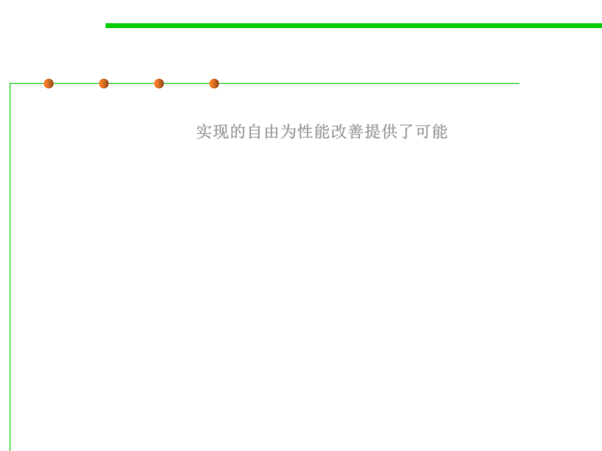

3.3 Abstract Data Type (ADT)
Why is beneficent mutation required?
▪ This kind of implementer freedom often permits performance
improvements like: 实现的自由为性能改善提供了可能
– Caching
– Data structure rebalancing
– Lazy computation(惰性计算、延迟计算，例：尽可能延迟表达式求值，仅
在必要时，而不是在声明时，对表达式进行求值)
– Lazy cleanup